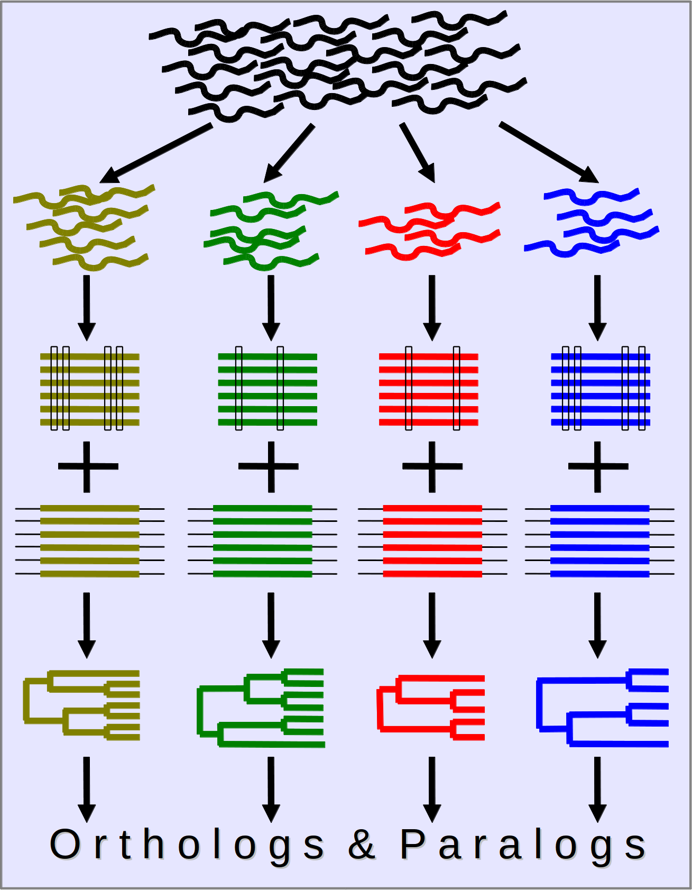
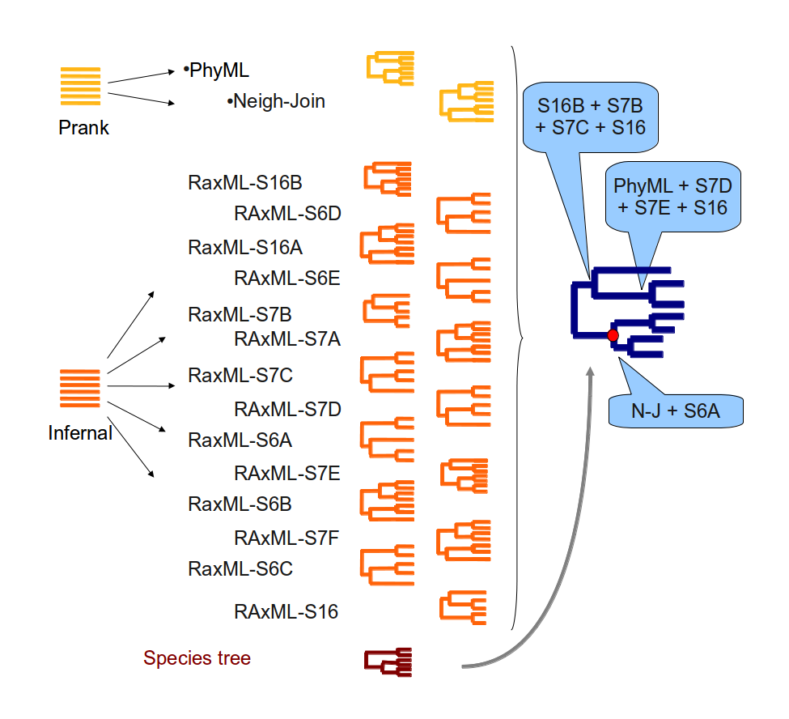

ncRNA orthology determination
ncRNA trees
Evolutionary models used for protein-coding genes assume the positions in the protein evolve independently. NcRNA genes are well known to form secondary structures where pairs of residues are matched to form loops and other structures. Substitution models that consider pairs of sites have been proposed and implemented in several packages like PHASE or RAxML.
The detection of orthologies and paralogies for short ncRNA genes are generated
by a pipeline that uses a strategy similar to the one explained for
Gene Trees1 but adapted to the specific
characteristics of ncRNAs like their secondary structure.
Reference:
ncRNA orthologies in the vertebrate linage.
Pignatelli M, Vilella AJ, Gordon L, Flicek P and Herrero J.
Manuscript in preparation
The ncRNA tree pipeline consists of the following steps:

- Get and store ncRNA Family Models from RFAM2
- Load and identify all the ncRNA members annotated in all the Ensembl genomes
- Filter out extra copies in low-coverage assemblies usin our EPO multiple alignments3
- Build secondary structure alignments using INFERNAL4 and refinement of the covariance model
- Build ncRNA trees with RAxML5 using 16 different secondary structure models
- In parallel with the secondary structure alignments and trees, build multiple alignments with PRANK6 with the genomic sequences of the ncRNAs. For these alignments we include the flanking region of the genes (2 times the length of the gene at each side).
- With the genomic alignments, build a neighbour-joining (NJ) and a maximum-likelihood (ML) tree using TreeBeST7.
- For very big families, build fast and efficient trees using FastTree8 and RAxML-Light
- For each family, add the species tree to the set of trees already obtained and reconcile them all using TreeBeST7 obtaining one final tree for each family.

- Infer orthology and paralogy relationships by comparing each pair of genes in each tree. The possible homology types are:
- Paralogs - Two genes are from the same species and derived from a duplication event in their ancestor.
- One-to-one Orthologs - Two genes are from different species, they are related by a speciation event and they are the only copies of the ancestral gene in their species
- Apparent Orthologs one-to-one - Are one-to-one orthologs that are related by an ambiguous node (a duplication that is not supported by any duplication in the extant species)
- One-to-many Orthologs - Two genes are from different species, there is evidence for duplication events in the history of the gene, one of the genes is the only remaining representative of the ancestor in its species but the other gene has multiple copies in its species
- Possible orthologs - Are dubious cases of genes related by an ill-supported duplication node.
More information about these relationships can be found in the Gene Trees1 documentation.
References
- Vilella AJ, Severin J, Ureta-Vidal A, Heng L, Durbin R, Birney E. EnsemblCompara GeneTrees: Complete, duplication aware phylogenetic trees in vertebrates. Genome Res 2009 19:327
- Gardner PP, Daub J, Tate J, Moore BL, Osuch IH, Griffiths-Jones S, Finn RD, Nawrocki EP, Kolbe DL, Eddy SR, Bateman A. Rfam: Wikipedia, clans and the "decimal" release. Nucleic Acid Res 2011, DatabaseIssue:D141
- Paten B, Herrero J, Beal K, Fitzgerald S, Birney E. Enredo and Pecan: genome-wide mammalian consistency-based multiple alignment with paralogs. Genome Res 2008 18:1814
- Nawrocki EP, Kolbe DL, Eddy SR. Infernal 1.0: inference of RNA alignments. Bioinformatics 2009 25:1335
- Stamatakis A. RAxML-VI-HPC: maximum likelihood-based phylogenetic analyses with thousands of taxa and mixed models. Bioinformatics 2006 22:2688
- Loytynoja A, Goldman N. webPRANK: a phylogeny-aware multiple sequence aligner with interactive alignment browser. BMC Bioinformatics 2010 11:579
- Li H et al. TreeBeST. http://treesoft.sourceforge.net/treebest.shtml
- Price MN, Dehal PS, Arkin AP. FastTree 2--aproximately maximum-likelihood trees for large alignments. PLoS One 2010 5:e9490